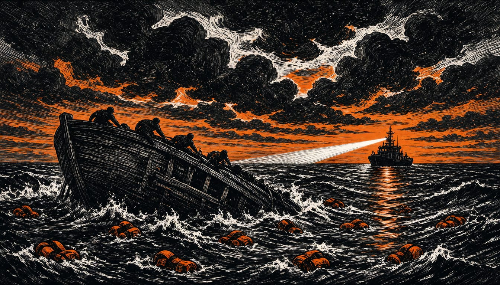

At least 20 dead in two boats off Crete, minister plans EU return hubs
Frontex says the Libya-to-Crete corridor is now the busiest part of the eastern Mediterranean route, with about 31,800 crossings so far this year, 15 percent fewer than in 2025.
Correction: An earlier version left out a second boat, found off Crete early on Monday 9 November with 12 dead and 18 survivors, and placed Monday's details with the boat found on Saturday.

The Greek coastguard recovered the bodies of 12 people and rescued 18 from a dinghy off southern Crete in the early hours of Monday, after a Moroccan-flagged container ship spotted it 15 nautical miles south-east of Kali Limenes. On Saturday evening the coastguard had recovered eight bodies and rescued 28 refugees and migrants from another boat; survivors said two more people fell into the sea and are still missing. Migration minister Pleuris will announce within days an initiative with other EU member states for return hubs outside Europe.
Frontex said the corridor from Libya to Crete is the busiest section of the eastern Mediterranean route, ahead of the eastern Aegean islands and the land border with Turkey. Frontex counted about 31,800 crossings in the first three quarters of 2026, a fall of 15 percent from a year earlier.
Frontex ran two more rescues south of Crete in the same Monday hours. A Frontex aircraft spotted a boat carrying about 47 migrants roughly 30 nautical miles south of Kali Limenes. A second boat with around 40 migrants was detected 31 nautical miles south-east of the same spot by an unmanned Frontex aircraft. Frontex rescue teams picked up the people on both boats and brought them ashore at Kali Limenes.
In the preliminary investigation, the Heraklion Central Coast Guard Authority arrested two Sudanese nationals, aged 28 and 16, after survivors identified them as the smugglers. A case file was opened against the two for illegal entry, facilitating illegal entry, forming a gang and fatal exposure.
Sevi Voloudaki of the Ministry of Migration and Asylum said the ministry is prepared for first reception on Crete, in Chania and Heraklion. Transport would go by a special floating facility to reception structures, depending on the profile of the people arriving, followed by the usual processing. She linked the growing flows to reduced cooperation with eastern Libya in recent days.